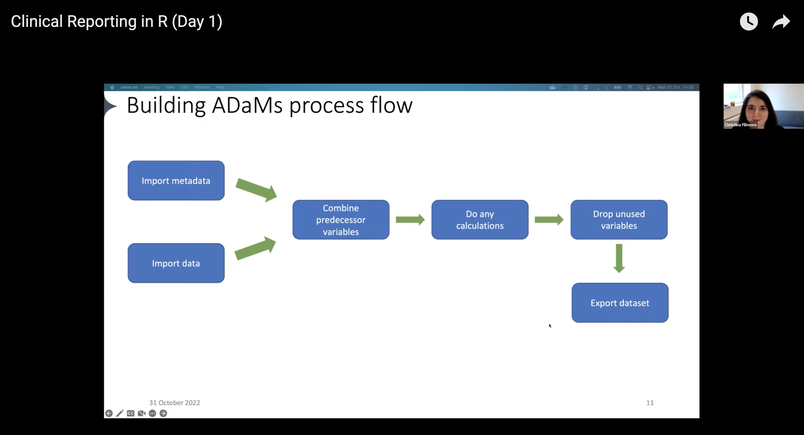
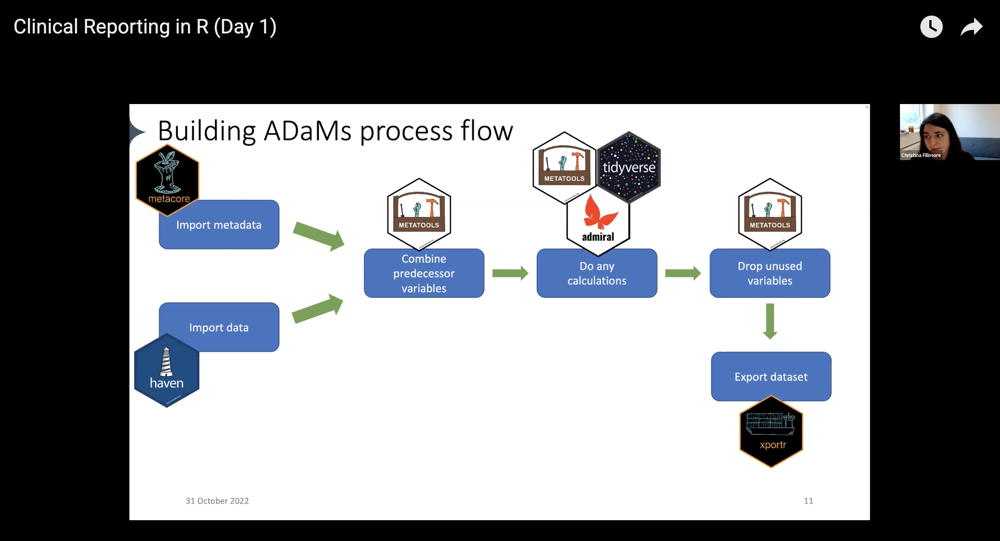

Pharmaceutical organizations must adhere to a specific set of procedures regarding their clinical trial submissions before sharing data with regulatory agencies. One crucial step in this process is the creation of subject-level analysis datasets (ADSL) and their accompanying metadata, which must comply with the Analysis Data Model (ADaM) standards.
To create ADaM datasets, a prespecified process that involves importing, tidying, and transforming data is required. Establishing a proper structure enables others to generate tables, listings, and figures more efficiently and ensures traceability. And by following this process, regulatory agencies can quickly review and approve a submission, which accelerates the release of safe and effective medicine to patients.
Creating common ADaM datasets follows a workflow that looks something like this:
Import data that would be helpful to add to your ADaMs
Pull in metadata
Combine predecessor variables
Run any calculations
Drop unused variables
Export the dataset

Example ADaM workflow, presented by Christina Fillmore
There are many different tools available that analysts can use for each step of the workflow. But often, analysts end up creating customized ways of doing things, which can be time-consuming and inefficient. Instead, it’s better to use standardized processes that can be reused across different projects. This not only saves time but also ensures consistency and accuracy in the work.
Noting this, representatives across Atorus, GSK, Janssen, and Roche started the pharmaverse, a curated stack of open-source R packages for clinical reporting. The pharmaverse is a collaboration between several pharmaceutical companies and individuals to reduce duplication efforts in clinical reporting and, ultimately, shorten the drug development process.
The pharmaverse provides analysts with a series of package to support the processes of clinical reporting, including building ADaM datasets. They don’t have to search for tools that serve their needs or create something from scratch.
With the pharmaverse, the workflow now looks like this:
Import data: use the haven package to import .sas7bdatfiles into R
Pull in metadata: use the metacore package to import and hold metadata, particularly for specifications
Combine predecessor variables together: use the metatools package to enable the use of metacore objects
Run any calculations / Drop unused variables: combine the tidyverse, metatools, and admiral for any ADaM-building needs
Export the dataset: use xportr to export files that meet clinical standards

Example ADaM workflow with respective pharmaverse package, presented by Christina Fillmore
This post provides a brief overview of the first three steps in the workflow, covered in the first part of the Clinical Reporting in R workshop. For a more in-depth understanding, we suggest referring to the two-part recording of the workshop. Stay tuned for part 2 of the series: Derive ADaM variables and parameters with admiral!
Setup project
To begin, load the necessary packages and functions. The workshop’s datasets consist of fake clinical data that complies with SDTM standards. We will import them from the workshop GitHub repository later on, but for now, we save all the relevant URLs in R objects.
Hold metadata for SDTM and ADaM datasets using metacore
Companies hold their predefined ADaM metadata in idiosyncratic ways, and standardizing this data became necessary to automate parts of ADaM creation. The metacore package solves by storing metacore objects in an organizational structure that standardizes specifications across organizations. It has been available on CRAN for over a year, and its developers continue to update it to comply with the latest CDISC standards.
Loading metadata into the metacore object requires readers. The metacore package comes with built-in readers for common metadata formats like Pinnacle 21 (P21). Here, we can import a P21 spec into R using spec_to_metacore():
Warning: core from the ds_vars table only contain missing values.
supp_flag from the ds_vars table only contain missing values.
dataset from the supp table only contain missing values.
variable from the supp table only contain missing values.
idvar from the supp table only contain missing values.
qeval from the supp table only contain missing values.
Metadata successfully imported
Immediately, we see that several columns are missing values: core, supp_flag, etc. Since we’re not creating a supplemental dataset yet, we can move on. We can remove the warnings by adding quiet = TRUE.
Automate dataset creation based on metacore
Now we can read in the SDTM demographic (dm) data using read_xpt() from the haven package:
With metatools, we loaded our data and subset it to only contain ADSL.
Now that we have the dataset to build, we can use the metatools package to automate the creation of variables from metacore objects. The next step is to combine predecessor variables. We can use metatools’ build_from_derived() to pull in a metacore object and the list of datasets from which to build (in this case, the dm dataset).
# Pull together all the predecessor variables adsl_pred <-build_from_derived(adsl_spec,ds_list =list("dm"= dm),keep =TRUE) %>%# Keep old namefilter(ARMCD %in%c("A", "P")) # Filter out anything with ARM codes other than placebo or activehead(adsl_pred)
# A tibble: 6 × 13
STUDYID USUBJID COUNTRY SITEID AGE AGEU SEX ETHNIC RACE ARM ARMCD
<chr> <chr> <chr> <dbl> <dbl> <chr> <chr> <chr> <chr> <chr> <chr>
1 GSK123456 GSK123456… CAN 101 62 YEARS F NOT H… MULT… Plac… P
2 GSK123456 GSK123456… CAN 101 60 YEARS M NOT H… AMER… Plac… P
3 GSK123456 GSK123456… CAN 101 38 YEARS F NOT H… AMER… Plac… P
4 GSK123456 GSK123456… CAN 101 47 YEARS F NOT H… MULT… Plac… P
5 GSK123456 GSK123456… CAN 101 57 YEARS F NOT H… AMER… Plac… P
6 GSK123456 GSK123456… CAN 101 62 YEARS M NOT H… ASIAN Plac… P
# ℹ 2 more variables: ACTARM <chr>, ACTARMCD <chr>
We can see we have 13 variables and 200 subjects. We can start building out some variables, but first, let’s see if any are missing.
check_variables(adsl_pred, adsl_spec)
Error in check_variables(adsl_pred, adsl_spec): The following variables are missing:
ACOUNTRY
AGEGR1
AGEGR1N
SEXN
ETHNICN
RACEN
TRT01P
TRT01PN
TRT01A
TRT01AN
HEIGHTBL
WEIGHTBL
BMIBL
SAFFL
MITTFL
RANDFL
TRTSDT
TRTEDT
LALVDOM
LALVSEQ
LALVVAR
LSTALVDT
We are missing quite a few variables! To start, let’s create the SEXN variable. The metacore object contains information from your spec, including control terms. We can obtain them using get_control_term().
get_control_term(adsl_spec, SEXN)
# A tibble: 2 × 2
code decode
<chr> <chr>
1 1 F
2 2 M
Metatools makes it easy to code our variables without tedious if-else statements. The create_var_from_codelist() function helps us pull in the reference variables we need to get our desired output.
# A tibble: 200 × 3
USUBJID SEX SEXN
<chr> <chr> <dbl>
1 GSK123456-1101 F 1
2 GSK123456-1104 M 2
3 GSK123456-1105 F 1
4 GSK123456-1106 F 1
5 GSK123456-1107 F 1
6 GSK123456-1108 M 2
7 GSK123456-1109 M 2
8 GSK123456-1111 F 1
9 GSK123456-1112 F 1
10 GSK123456-1115 M 2
# ℹ 190 more rows
We can see that F values became 1 and M values became 2 under SEXN. We can do the same for other variables like RACEN, ETHNICN, etc., in a single pipe.
We can check adsl_decode to see if there are any other missing variables.
check_variables(adsl_decode, adsl_spec)
Error in check_variables(adsl_decode, adsl_spec): The following variables are missing:
AGEGR1
AGEGR1N
HEIGHTBL
WEIGHTBL
BMIBL
SAFFL
MITTFL
RANDFL
TRTSDT
TRTEDT
LALVDOM
LALVSEQ
LALVVAR
LSTALVDT
We can also use metatools for categorization, such as with age group, with create_cat_var(). Like before, we provide an input variable and a reference variable, as well as name our desired output variable. We can also add a variable for decoding.
get_control_term(adsl_spec, AGEGR1) # See age group categories
Error in check_variables(adsl, adsl_spec): The following variables are missing:
HEIGHTBL
WEIGHTBL
BMIBL
SAFFL
MITTFL
RANDFL
TRTSDT
TRTEDT
LALVDOM
LALVSEQ
LALVVAR
LSTALVDT
Calculations are needed to fill in the missing variables. In the upcoming post of this series, we will proceed to the next step in our workflow, which involves running the necessary calculations with admiral.
Learn more
We hope you enjoyed the first post on how to use the pharmaverse for creating ADaM ADSL with the pharmaverse. We showed only some of the available packages and functions; check out the breadth of the pharmaverse on the website and peruse the provided examples.
Again, we thank the instructors of Clinical Reporting in R for their materials. Please watch the Day 1 and Day 2 recordings for more detailed information and for walkthroughs on other parts of the clinical reporting workflow.
At Posit, we have a dedicated Pharma team to help organizations migrate and utilize open source for drug development. To learn more about our support for life sciences, please see our dedicated Pharma page, where you can book a call with our team.